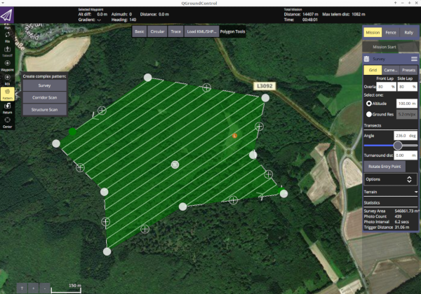
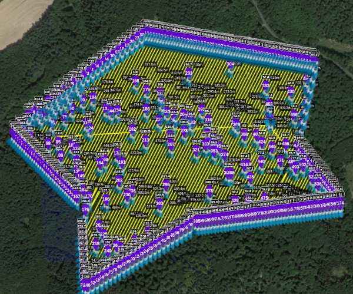

vignettes/uavRmp_2.Rmd
uavRmp_2.RmdWe want to plan a flight in a structured terrain in the upper Lahn-valley. Start the QGroundcontrol and navigate to Mission tab and open Pattern->Survey. Start digitizing a pattern as you want and also fill in the values on the right sided menus for camera angel overlap and so on. 
Save this at an appropriate folder. To use this planning file you
have to set in makeAP the switch:
useMP = TRUEThe planning with QGroundControl is much more powerful and
comfortable than the simple planning with uavRmp. However, if you want
to use some features like near-surface flights or more important a
survey planning for DJI/Litchi, some parameters have to be set very
carefully to make this export usable. Especially the Litchi export needs
some care. Not all parameters from the Qgroundcontrol settings are taken
over. Crucial is: * Set correct camera parameterization * choose
calc above terrain and a reasonable tolerance
filter (<=5)
With the parameters: horizonFilter,
followSurfaceRes, altFilter the behavior of
the smoothing of the flight curve is set. It makes sense to keep the
values the same at first. If the followSurfaceRes is set
bigger than the distance of the single flight lines it will be
automatically reduced.
By default noFiles is set to one. Due to the modern UAVs
it is strongly recommended to keep it so. If you want to calculate
single tasks you may set it to the number you need. However the task
splitting is switched off which is useful for the modern DJI UAVs
because you can use every waypoint in as a manual starting point for the
continuation of the task after a battery change.
Note: For a problem-free terrain contour flight it
is obligatory to set the parameter
above_ground = FALSE.
The example below shows a meaningful example for an Air 2S DJI and a 30m ASL flight over beech wood with default settings.
demFn <- system.file("extdata", "mrbiko.tif", package = "uavRmp")
tutorial_flightArea <- system.file("extdata", "tutdata_qgc_survey30m.plan", package = "uavRmp")
fp <- makeAP(projectDir = tempdir(),
surveyArea = tutorial_flightArea,
useMP = TRUE,
followSurface = TRUE,
above_ground = FALSE,
demFn = demFn,
uavType = "dji_csv"
)The result looks like this in Litchi.

It is easy to see that there are major errors in the transmission.
These resuls from the (a) a complex outer hull of the structure and that b) the turning points which are necessary to maintain the lateral overlap are filtered out in the DSM analysis. There are some simple ways to overcome this structural problem:
followSurfaceRes = 2
horizonFilter = 2
altFilter = 5.0
buf_mult = 3
So adding a extended turning point tolerance (mult-buf)
the results looks like below:
demFn <- system.file("extdata", "mrbiko.tif", package = "uavRmp")
tutorial_flightArea <- system.file("extdata", "tutdata_qgc_survey30m.plan", package = "uavRmp")
fp <- makeAP(projectDir = tempdir(),
surveyArea = tutorial_flightArea,
useMP = TRUE,
followSurface = TRUE,
buf_mult = 3,
above_ground = FALSE,
demFn = demFn,
uavType = "dji_csv"
)Litchi result
Modifying the terrain following control arguments
followSundrfaceRes, horizonFilter and
altFilter will yield in a much more detailed control
file:
demFn <- system.file("extdata", "mrbiko.tif", package = "uavRmp")
tutorial_flightArea <- system.file("extdata", "tutdata_qgc_survey30m.plan", package = "uavRmp")
fp <- makeAP(projectDir = tempdir(),
surveyArea = tutorial_flightArea,
useMP = TRUE,
followSurface = TRUE,
buf_mult = 3,
followSurfaceRes = 2,
horizonFilter = 2,
altFilter = 5,
above_ground = FALSE,
demFn = demFn,
uavType = "dji_csv"
)Litchi result